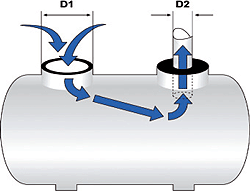
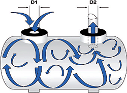
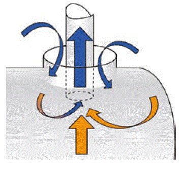
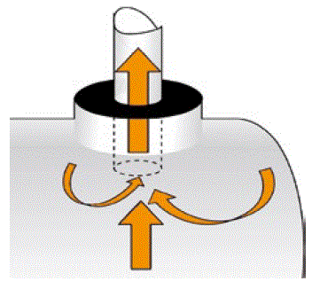
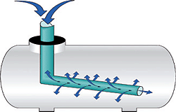

 | Bei Behältern mit mehreren Öffnungen sollte der Durchmesser der Zuluft-Öffnung dem der Absaugöffnung entsprechen. Ist die Zuluft-Öffnung größer, entsteht ein nahezu laminarer Luftstrom mit relativ geringer Strömungsgeschwindigkeit, der die Randbereiche des Behälters nicht erfasst. |
 | Sind Ein- und Austrittsquerschnitt gleich, führt das zu einer Erhöhung der Lufteintrittsgeschwindigkeit verbunden mit einer turbulenten Strömung, die auch die Randbereiche des Behälters erfasst. |
 | Sind zwei oder mehr Tanköffnungen vorhanden, sollte beim Absaugen der freie Querschnitt um den Absaugschlauch, z. B. mit einer Plane, einem Sack etc., abgedeckt werden. Durch diese leicht zu realisierende Maßnahme würde keine Außenluft mehr mit angesaugt. Die mit Schadstoffen belastete Luft würde somit durch die nachströmende Frischluft ausgetauscht. Dies ist mit einer wesentlichen Verbesserung der Absaugleistung verbunden. |
 | Durch die beschriebene Abdeckung wäre auch sichergestellt, dass Personen im Notfall den Tank schnell verlassen können, zumal sich der Schlauch samt Abdeckung von innen leicht wegdrücken oder beiseite schieben lässt. |
 | Wird Frischluft eingeblasen, hat es sich bewährt, den Luftschlauch über die gesamte im Behälter befindliche Länge mit kleinen Öffnungen zu versehen. |